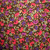

Image Processing Toolbox Demos
Color Segmentation

Color-Based Segmentation Using the L*a*b* Color Space
Color-Based Segmentation Using K-Means Clustering
(This demo requires the Statistics Toolbox.)